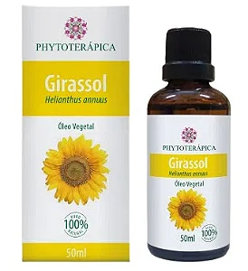
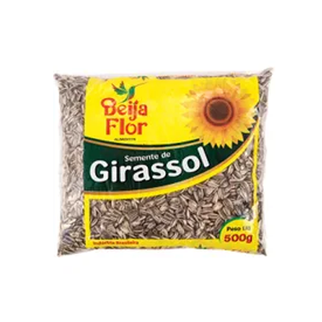

derivados do girassol



óleo

sementes
O girassol é uma planta bastante conhecida, principalmente por sua beleza e seus derivados que costumam movimentar a economia. Importante por poder ser extraído seu óleo, assim como também é utilizado para a fabricação do biodiesel, a plantação de girassol tem muitas vantagens.
E um mercado muito amplo que trâz beneficio para o campo e para cicade.